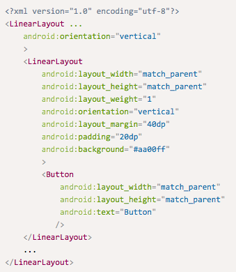
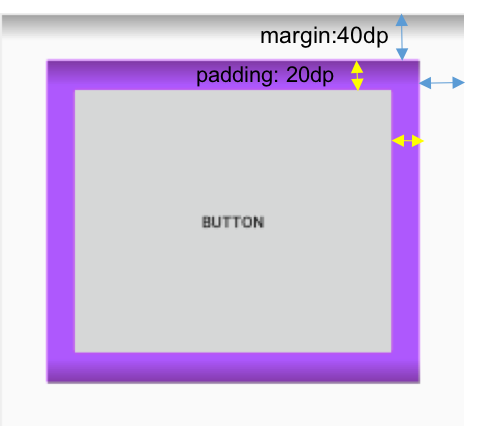
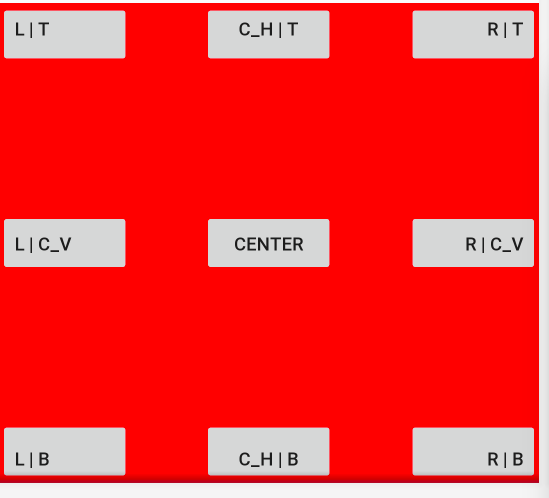

위젯(Wdiget)은 View의 서브 클래스 중에서 화면에 보이는 것들을 말함
- 대표적인 위젯은 TextView, EditText, Button 등이 있습니다.

안드로이드 앱의 UI를 구성하는 기본 단위는 뷰(View)이다.
AndroidStudio의 Layout Editor 이용
XML file을 직접 편집
위젯(Wdiget)은 View의 서브 클래스 중에서 화면에 보이는 것들을 말함
View 클래스는 모든 UI 컴포넌트들의 부모 클래스이므로, View 클래스의 속성은 모든 UI 컴포넌트들에서 공통적으로 사용할 수 있다.
id: UI 컴포넌트를 고유하게 식별하는 식별자
layout_width, layout_height: UI 컴포넌트의 크기를 결정
wrap_content: UI 컴포넌트의 내용물 크기에 맞춤
<Button
android:layout_width="wrap_content"
android:layout_height="wrap_content"
android:text="Start"/>
layout_width, layout_height의 값을 특정한 단위로 지정할 수도 있음
<Button
android:layout_width="100px"
android:layout_height="100px"
android:text="Start"/>px (pixels), in (inches), mm (millimeters)
Pixel 방식으로 view의 크기를 설정하면, 디스플레이의 해상도에 따라 view의 크기가 달라 보일 수 있습니다.
가령, 가로세로 100 pixel 크기의 UI요소는 저해상도 디스플레이에서 보이는 것이 고해상도 디스플레이어에서 보이는 것보다 크게 보입니다.

dp (density-independent pixels): 밀도에 독립적인 단위
1 dp는 밀도가 160dpi의 화면 일때 1 픽셀을 나타냄

background
생성된 ui_component_size.xml 파일의 내용을 아래와 같이 수정해 보자.
<?xml version="1.0" encoding="utf-8"?>
<LinearLayout xmlns:android="http://schemas.android.com/apk/res/android"
android:orientation="vertical"
android:layout_width="match_parent"
android:layout_height="match_parent">
<TextView
android:layout_width="match_parent"
android:layout_height="wrap_content"
android:text="Width = Match Parent"/>
<TextView
android:layout_width="wrap_content"
android:layout_height="wrap_content"
android:text="Width = wrap content"/>
<TextView
android:layout_width="100dp"
android:layout_height="wrap_content"
android:text="Width = 100dp"/>
</LinearLayout>XML 코드에서 TextView 위젯의 layout_width, layout_height의 값을 아래와 같이 다양하게 변경하여 보고, [Design] 탭을 클릭하여 변화를 살펴본다.
[참고] ui_component_size.xml 파일의 내용을 실제 혹은 가상 디바이스에 표시하기 위해서는 MainActivity 클래스의 코드에서 setContentView() 함수를 다음과 같이 수정하여야 함
public class MainActivity extends AppCompatActivity {
@Override
protected void onCreate(Bundle savedInstanceState) {
super.onCreate(savedInstanceState);
setContentView(R.layout.ui_component_size); // 이 부분이 변경됨
}
}true이면, 텍스트가 위젯의 폭보다 길 때 강제로 한 줄에 출력
text: 일반적인 텍스트 키보드
phone: 전화번호 입력 키보드
textEmailAddress: @ 문자를 가진 텍스트 키보드
textCapWords: 문장의 시작을 대문자로 변환
textAutoCorrect: 입력된 단어와 유사한 단어를 제시하고 제시된 단어 선택시, 입력된 단어를 대치
textMultiLine: 여러 줄을 입력 받을 수 있음
생성된 text_views.xml 파일의 내용을 아래와 같이 수정해 보자.
<?xml version="1.0" encoding="utf-8"?>
<LinearLayout xmlns:android="http://schemas.android.com/apk/res/android"
android:orientation="vertical"
android:layout_width="match_parent"
android:layout_height="match_parent">
<TextView
android:layout_width="wrap_content"
android:layout_height="wrap_content"
android:text="EditText Test"
android:textColor="#ff0000"
android:textSize="10pt"
android:typeface="serif"
android:textStyle="bold"
/>
<EditText
android:layout_width="match_parent"
android:layout_height="wrap_content"
android:hint="ID"
android:inputType="text"
android:textSize="10pt"
android:textStyle="italic" />
<EditText
android:layout_width="match_parent"
android:layout_height="wrap_content"
android:hint="Password"
android:inputType="textPassword"
android:textSize="10pt"
android:textStyle="italic" />
<EditText
android:layout_width="match_parent"
android:layout_height="wrap_content"
android:hint="Telephone"
android:inputType="phone"
android:textSize="10pt"
android:textStyle="italic" />
<EditText
android:layout_width="match_parent"
android:layout_height="wrap_content"
android:hint="Email"
android:inputType="textEmailAddress"
android:textSize="10pt"
android:textStyle="italic" />
<EditText
android:layout_width="match_parent"
android:layout_height="wrap_content"
android:hint="Description"
android:inputType="text|textMultiLine|textAutoCorrect"
android:textSize="10pt"
android:textStyle="italic" />
</LinearLayout> 위 파일의 내용을 실제 혹은 가상 디바이스에 표시하기 위해서는 MainActivity 클래스의 setContentView() 함수를 다음과 같이 수정하여야 함
public class MainActivity extends AppCompatActivity {
@Override
protected void onCreate(Bundle savedInstanceState) {
super.onCreate(savedInstanceState);
setContentView(R.layout.text_views); // 이 부분이 변경됨
}
}디바이스 실행화면에 표시된 5개의 EditText 입력창을 각각 선택하여 텍스트를 입력하였을 때, 키보드의 변화 및 입력 행위의 변화를 살펴보시오.
일반적으로 많이 사용되는 푸시 버튼으로 사용자가 버튼을 클릭하였을 때, 어떤 행동을 수행하고자 할 때 사용된다.

Button 클래스는 TextView의 서브클래스이므로, TextView의 모든 속성을 사용할 수 있다.
버튼 내에 텍스트, 아이콘을 표시할 수 있음
예제 (연습 2의 text_views.xml 파일에 버튼 위젯 추가)
<?xml version="1.0" encoding="utf-8"?>
<LinearLayout ...>
...
<EditText ... />
<Button
android:layout_width="wrap_content"
android:layout_height="wrap_content"
android:text="Submit"
/>
</LinearLayout>버튼 위젯을 정의한 화면을 contentView로 설정한 액티비티 클래스에 새로운 메소드(예, doAction())를 추가한다.
public class MainActivity extends AppCompatActivity {
@Override
protected void onCreate(Bundle savedInstanceState) {
super.onCreate(savedInstanceState);
setContentView(R.layout.text_views);
}
public void doAction(View v) {
// Shows a Toast message in response to button
Toast.makeText(getApplicationContext(), "Submitted Successfully",
Toast.LENGTH_SHORT).show();
}
}버튼 위젯을 정의한 xml 레이아웃 파일(예, text_views.xml)에서, 버튼 위젯의 onClick 속성에 앞 단계에서 추가한 메소드(예, doAction())를 설정한다.
<?xml version="1.0" encoding="utf-8"?>
<LinearLayout ...>
...
<Button
android:layout_width="wrap_content"
android:layout_height="wrap_content"
android:text="Submit"
android:onClick="doAction"/>
</LinearLayout>이 방법에서는 이벤트를 처리하는 객체를 생성하여 해당 이벤트를 발생시키는 위젯에 등록한다. 위젯에서 이벤트가 발생하면 등록된 이벤트 처리 객체가 정의된 일을 수행한다.
절차
예제
버튼 위젯을 정의한 xml 레이아웃 파일(예, text_views.xml)에서, Button 객체를 Java 코드에서 참조하기 위해서 버튼 위젯에 id 속성 추가
<?xml version="1.0" encoding="utf-8"?>
<LinearLayout ...>
...
<Button
android:id="@+id/submit_button"
android:layout_width="wrap_content"
android:layout_height="wrap_content"
android:text="Submit"
android:onClick="doAction"/>
</LinearLayout>이벤트 처리 객체 생성 및 등록
public class MainActivity extends AppCompatActivity {
@Override
protected void onCreate(Bundle savedInstanceState) {
super.onCreate(savedInstanceState);
setContentView(R.layout.text_views);
// text_views.xml에 정의된 View 객체 중에서 id가 submit_button인 것을 찾아 반환함
Button btn = findViewById(R.id.submit_button);
//2. 구현한 클래스의 객체를 생성하여 클릭 이벤트를 발생시키는 버튼 위젯에 등록
btn.setOnClickListener(new ClickListener());
}
...
//1. 버튼이 클릭되었을 때 발생되는 클릭 이벤트를 처리하기 위해서는 View.OnClickListener 인터페이스를 구현하는 클래스 정의
class ClickListener implements View.OnClickListener {
@Override
public void onClick(View v) {
Toast.makeText(getApplicationContext(), R.string.button_clicked_msg,
Toast.LENGTH_SHORT).show();
}
}
}
참고 (findViewByID() 함수)
주요 속성
orientation

layout_weight
| linear_layout.xml | 실행화면 |
|---|---|
 |
 |
주요 속성
| 속성 | 설명 |
|---|---|
| layout_alignBaseline | anchor view와 baseline을 맞춘다 |
| layout_alignBottom | anchor view와 아래쪽 가장자리를 맞춘다 |
| layout_alignTop | anchor view와 위쪽 가장자리를 맞춘다 |
| layout_alignLeft | anchor view와 왼쪽 가장자리를 맞춘다 |
| layout_alignRight | anchor view와 오른쪽 가장자리를 맞춘다 |
| layout_Above | anchor view의 위쪽에 배치 |
| layout_Below | anchor view의 아래쪽에 배치 |
| layout_toLeft | anchor view의 왼쪽에 배치 |
| layout_toRight | anchor view의 오른쪽에 배치 |
| 속성 | 설명 |
|---|---|
| layout_centerHorizontal | 수평 방향으로 컨테이너의 가운데 배치 |
| llayout_centerVertical | 수직 방향으로 컨테이너의 가운데 배치 layout_centerInParent |
| layout_alignParentLeft | 컨테이너와 왼쪽 가장자리를 맞춘다. |
| layout_alignParentRight | 컨테이너와 오른쪽 가장자리를 맞춘다. |
| layout_alignParentBottom | 컨테이너와 아래쪽 가장자리를 맞춘다. |
| layout_alignParentTop | 컨테이너와 위쪽 가장자리를 맞춘다. |
| other_layout.xml | 실행화면 |
|---|---|
 |
 |
표 형식으로 차일드를 배치하는 레이아웃
표를 구성하는 행의 개수만큼 TableRow를 포함하고, TableRow는 각 행에 포함된 셀(View)을 포함한다.
주요 속성
*: 모든 열을 늘여서 배치한다.
1, 2: 1열(왼쪽에서 2번째)과 2열 (왼쪽에서 3번째) 을 늘여서 배치한다
TableRow
| other_layout.xml | 실행화면 |
|---|---|
 |
 |
| other_layout.xml | 실행화면 |
|---|---|
 |
 |
Padding: 뷰와 내용물 간의 간격
| margin_padding_gravity.xml | 실행화면 |
|---|---|
|  |  |

<FrameLayout
android:layout_width="match_parent"
android:layout_height="match_parent"
android:background="#ff0000"
android:layout_weight="1">
<Button
android:layout_width="100dp"
android:layout_height="wrap_content"
android:text="L | T"
android:gravity="left|top"
android:layout_gravity="left"/>
<Button
android:layout_width="100dp"
android:layout_height="wrap_content"
android:text="C_H | T"
android:gravity="center_horizontal|top"
android:layout_gravity="center_horizontal"/>
<Button
android:layout_width="100dp"
android:layout_height="wrap_content"
android:text="R | T"
android:gravity="right|top"
android:layout_gravity="right"/>
<Button
android:layout_width="100dp"
android:layout_height="wrap_content"
android:text="L | C_V"
android:gravity="left|center_vertical"
android:layout_gravity="center_vertical"/>
<Button
android:layout_width="100dp"
android:layout_height="wrap_content"
android:text="Center"
android:layout_gravity="center"/>
<Button
android:layout_width="100dp"
android:layout_height="wrap_content"
android:text="R | C_V"
android:gravity="right|center_vertical"
android:layout_gravity="center_vertical|right"/>
<Button
android:layout_width="100dp"
android:layout_height="wrap_content"
android:text="L | B"
android:gravity="left|bottom"
android:layout_gravity="bottom"/>
<Button
android:layout_width="100dp"
android:layout_height="wrap_content"
android:text="C_H | B"
android:gravity="center_horizontal|bottom"
android:layout_gravity="center_horizontal|bottom"/>
<Button
android:layout_width="100dp"
android:layout_height="wrap_content"
android:text="R | B"
android:gravity="right|bottom"
android:layout_gravity="right|bottom"/>
</FrameLayout>